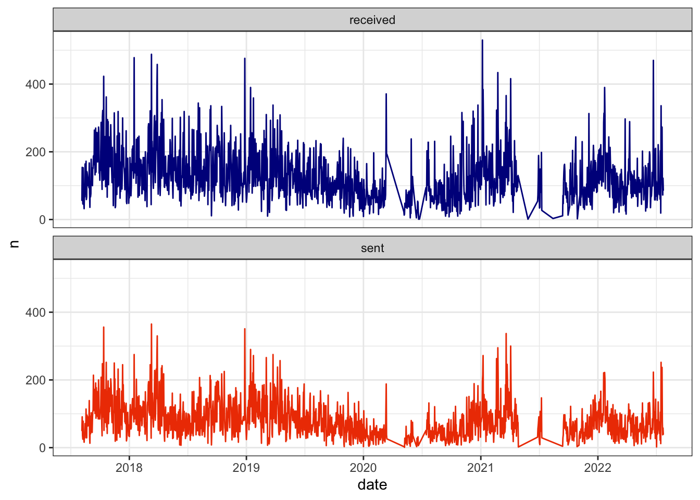
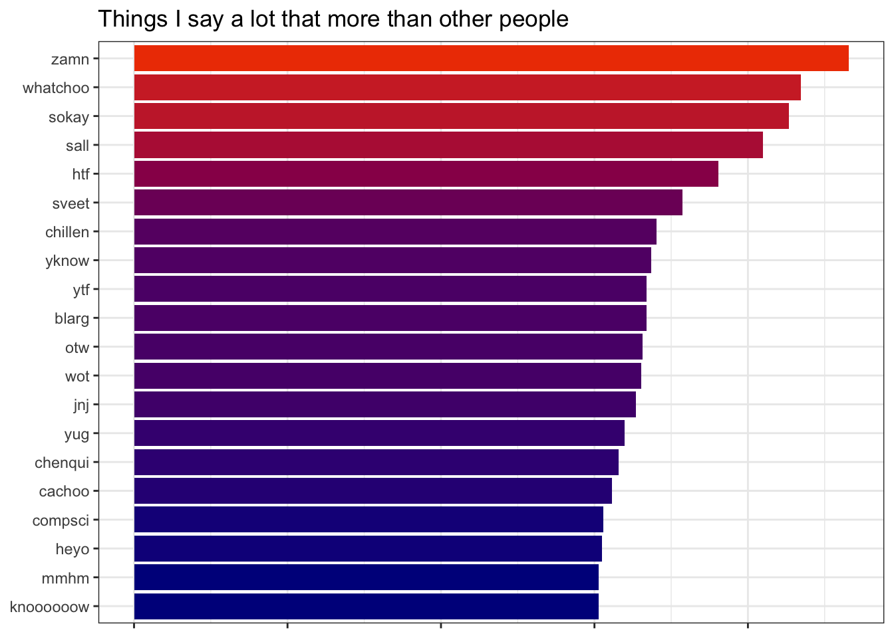

A thin silver lining of the massive digital footprint we leave behind is that occasionally we’re given the opportunity to access and analyze some personal data instead of just handing it over to Big Tech.
Which is why I delighted in the discovery that, as a Mac user, all of my iMessages are in the mysterious Library folder within the root directory, housed in a database called chat.db that I can query directly from R with the guidance of this helpful post.
It’s a bit safer to copy the database somewhere else before using it, though. To do so, first make sure that your Terminal has full disk access:

Then use the Terminal to navigate to the Library/Messages folder and copy chat.db somewhere more useful, such as the Desktop.
cd ~/Library/Messages/
cp chat.db /Users/YOUR_NAME_HERE/Desktop/chat.dbIn my case, I also needed my contacts database, since iMessage sometimes uses email addresses to send texts as opposed to phone numbers. I copied that database to the Desktop as well, this time under a new name contacts.db. Your subdirectory under Sources will probably not be named the same thing, and you might have multiple – use the one that is the largest, as this user points out:
cd ~/Library/Application\ Support/AddressBook/Sources/DDC2B856-A6BB-4600-9FAE-62A73F84C665/
cp AddressBook-v22.abcddb /Users/YOUR_NAME_HERE/Desktop/contacts.dbOnce you’ve moved both of those databases, the rest of the analysis can be implemented with R.
Code
library(tidyverse)
library(lubridate)
library(DBI)
library(gganimate)
library(png)
library(grid)
library(tidytext)
set.seed(0)
setwd("/Users/walkerharrison/Desktop/")
con_chat <- dbConnect(RSQLite::SQLite(), dbname = "chat.db")
chat_query <- "
select distinct
m.rowid as msgid, coalesce(m.cache_roomnames, h.id) as thread,
m.is_from_me,
datetime((m.date / 1000000000) + 978307200, 'unixepoch', 'localtime') as datetime,
m.text
from message m
left join handle as h on m.handle_id = h.rowid
order by m.date desc
"
messages_raw <- dbGetQuery(con_chat, chat_query)
# if you need contact information, copy contacts db as well
# ~/Library/Application Support/AddressBook/Sources
con_contacts <- dbConnect(RSQLite::SQLite(), dbname = "contacts.db")
contacts_query <- "
select
r.Z_PK as contactid,
r.ZFIRSTNAME as first, r.ZLASTNAME as last,
n.ZFULLNUMBER as number, e.ZADDRESS as email
from ZABCDRECORD r
left join ZABCDPHONENUMBER n on r.Z_PK = n.ZOWNER
left join ZABCDEMAILADDRESS e on r.Z_PK = e.ZOWNER
"
contacts_raw <- dbGetQuery(con_contacts, contacts_query)
# standardize phone numbers
contacts <- contacts_raw %>%
mutate(number = str_replace_all(number, "[\\+\\(\\)\\- ]", "")) %>%
mutate(number = ifelse(nchar(number) < 11, paste0(1, number), number)) %>%
mutate(number = ifelse(!is.na(number), paste0("+", number), number))
messages <- messages_raw %>%
filter(!is.na(thread)) %>%
left_join(contacts, by = c('thread' = 'number'), keep = TRUE) %>%
left_join(contacts, by = c('thread' = 'email'), keep = TRUE) %>%
transmute(msgid, is_from_me,
datetime = as_datetime(datetime),
date = as_date(datetime),
thread,
contactid = coalesce(contactid.x, contactid.y),
first = coalesce(first.x, first.y),
last = coalesce(last.x, last.y),
number = coalesce(number.x, number.y),
email = coalesce(email.x, email.y),
text) %>%
filter(!is.na(text)) %>%
mutate(thread = ifelse(!is.na(contactid), paste0('c', contactid), thread)) Usually the best thing to do with data this large is to simply count it. In total, I’ve exchanged over 330,000 messages since the dataset’s inception in late summer of 2017, although in the graph below you can see some missing periods in early 2020 and summer of 2021. On a daily basis, I receive about 130 texts and send out about 80.
The day I received the most messages was January 6, 2021, as my friends and I marveled at this country’s crumbling democracy. The day I sent the most messages was March 11, 2018 when I was trying to teach a friend how to web scrape (you’re welcome, Dave).
Code
daily_message_counts <- messages %>%
count(date, is_from_me) %>%
transmute(date, type = ifelse(is_from_me, "sent", "received"), n)
p1 <- daily_message_counts %>%
ggplot(aes(date, n, col = type)) +
geom_line() +
facet_wrap(~type, nrow = 2) +
scale_color_manual(values = c("dark blue", "orangered2")) +
theme_bw() +
theme(legend.position = "none")
As I did in my post about GroupMe messages, I can compare how frequently I use terms vs. the people who message me to determine which phrases define my vernacular. Below are the top twenty terms I use more than others, scored using the difference in log frequency.
Most of the terms are slight mutations of normal phrases (“damn” to “zamn” or “sweet” to “sveet” or “yuck” to “yug”). “jnj” refers to the Johnson & Johnson COVID vaccination I got last year, while “chenqui” is a mispelling of “chenquieh,” which is how Borat says thank you.
Code
msgs_tokens <- messages %>%
mutate(text = str_replace_all(text, "’", "'")) %>%
select(is_from_me, text) %>%
unnest_tokens(word, text) %>%
anti_join(stop_words, by = "word") %>%
filter(!str_detect(word, "\\.")) %>%
filter(!str_detect(word, "_")) %>%
filter(!str_detect(word, "\\d"))
my_words <- msgs_tokens %>%
group_by(is_from_me, word) %>%
summarize(n = n()) %>%
ungroup() %>%
complete(is_from_me, word, fill = list(n = 0)) %>%
group_by(is_from_me) %>%
mutate(n_total = sum(n)) %>%
mutate(p = (n+1)/(n_total+1)) %>%
select(-n_total, -n) %>%
spread(is_from_me, p) %>%
mutate(score_diff = log(`1`) - log(`0`)) %>%
select(word, score_diff) %>%
arrange(desc(score_diff)) %>%
head(20)
p2 <- my_words %>%
arrange(score_diff) %>%
mutate(word = factor(word, levels = .$word)) %>%
ggplot(aes(word, score_diff, fill = score_diff)) +
geom_col(show.legend = FALSE) +
labs(x = NULL, y = NULL, title = "Things I say a lot that more than other people") +
coord_flip() +
scale_fill_gradient(low = "dark blue", high = "orangered2") +
theme_bw() +
theme(axis.text.x = element_blank())
While these macro trends are fun to tease out, ultimately I wanted to do this project to examine my personal life as expressed via texting. These days, messaging is the heartbeat of most of our relationships, whether they be friends, family, or romantic partners. It follows that this database would show me who the most important people in my life are, and how that might have changed over time.
I’m not going to list out my most frequent conversations because that’s private and also doesn’t mean anything to the majority of readers. Rather, I’d like to try to create a visualization that’s a little more universal.
If you imagine yourself as the center of the universe (quite easy for a narcissist like me), you can think of message exchanges between others as drawing those contacts nearer to you while silence pulls them back to the periphery. To achieve this spatially, we simply distribute people randomly at angles around the origin (my bitmoji) and let their rolling text frequency determine their radius (and also their size and color for extra effect).
Below I apply this idea to the 213 unique conversations I’ve had since last September. Most exchanges are transient and only bubble up for a brief moment. My core relationships – my close friends, my family, my group chats that won’t shut up – hover continuously around me. Some people regularly pop in and out of my life; others start close and fade:
Code
messages_recent <- messages %>% filter(date >= "2021-09-14")
thread_counts <- messages_recent %>%
count(thread, first, last, sort = TRUE) %>%
# rank randomly
arrange(rnorm(nrow(.))) %>%
mutate(rank = row_number()) %>%
# distribute along circle
mutate(angle = 2*pi*rank/max(rank))
daily_thread_counts <- messages_recent %>%
count(date = as_date(datetime), thread) %>%
arrange(date, thread) %>%
# fill out 0-count days
complete(date, thread, fill = list(n = 0)) %>%
mutate(date_idx = as.numeric(as.factor(date)))
coordinates <- daily_thread_counts %>%
group_by(thread) %>%
# triangular rolling average (smooths forward and backward)
mutate(n2 = pracma::movavg(n, 14, type = 't')) %>%
# radius is determined by rolling average
# minimum radius to allow room for my fat head in middle
mutate(radius = 1 - atan(n2/5)*2/pi + 0.35) %>%
inner_join(thread_counts %>% select(thread, first, last, angle, rank), by = "thread") %>%
# convert back to cartesian
mutate(x = radius*cos(angle),
y = radius*sin(angle)) %>%
# interpolate for smoother visualization
mutate(idx = row_number(),
nextx = lead(x),
nexty = lead(y)) %>%
slice(rep(1:nrow(.), each = 5)) %>%
group_by(thread, idx) %>%
mutate(idx2 = row_number()) %>%
mutate(newx = x + (idx2-1)/5*(nextx - x),
newy = y + (idx2-1)/5*(nexty - y)) %>%
group_by(thread) %>%
mutate(idx = row_number()) %>%
ungroup()
p <- coordinates %>%
ggplot(aes(newx, newy)) +
geom_point(aes(size = 1 - (radius-0.25), fill = radius),
col = "black",
pch = 21,
alpha = 0.8) +
scale_x_continuous(limits = c(-1.5, 1.5)) +
scale_y_continuous(limits = c(-1.5, 1.5)) +
scale_size_area(max_size = 15) +
scale_fill_gradient(low = "orangered2", high = "dark blue") +
theme_void() +
theme(legend.position = "none")
walker_head <- readPNG("/Users/walkerharrison/Desktop/walkerhead.png")
annotation_custom2 <- function (grob, xmin = -Inf, xmax = Inf, ymin = -Inf, ymax = Inf, data){
layer(data = data, stat = StatIdentity, position = PositionIdentity,
geom = ggplot2:::GeomCustomAnn,
inherit.aes = TRUE, params = list(grob = grob,
xmin = xmin, xmax = xmax,
ymin = ymin, ymax = ymax))
}
annotation <- annotation_custom2(rasterGrob(walker_head, interpolate = TRUE),
xmin = -0.4, xmax = 0.4, ymin = -0.4, ymax = 0.4,
data = coordinates)
p <- p + annotation
p <- p + transition_manual(idx) +
labs(title = '{coordinates$date[as.integer(frame)]}')
gif <- animate(p, fps = 10, nframes = 300, height = 300, width = 300)
While I finish most of my posts by encouraging readers to run the analyses for themselves, I can’t advise people to dive into their old text messages without also noting that this was an emotionally turbulent exercise. Yes, tracing your life backwards leads you through moments of joy and laughter but it also can force you to re-live some disappointments and dashed dreams. I had to stop myself from interminably re-reading old conversations, as tempting as it was to drink deeply from this fascinating information pool, since I wasn’t convinced it was good for my mental state.
In any case, I hope you’ve enjoyed some of the discussion above regardless of whether you’re considering doing it for yourself. Chenquieh for reading!